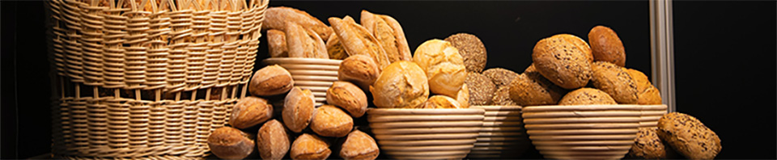

Minha Padaria
Bem-vindo a Minha Padaria, sua fonte diária de Pães
Padaria ou panificadora é um comércio de grande popularidade em vários países. Em sua grande maioria, são empresas de pequeno porte, mas vários empresários estão investindo, para poderem ser conhecidos como Grandes Casas. O pão e demais produtos panificados são os principais produtos comercializados pelas padarias Wikipédia